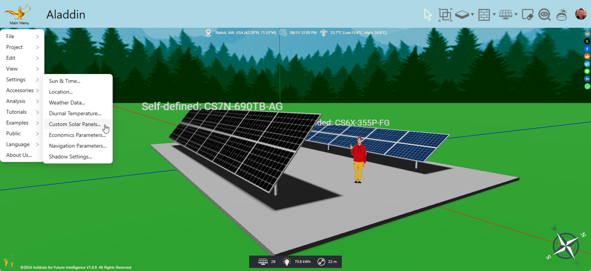
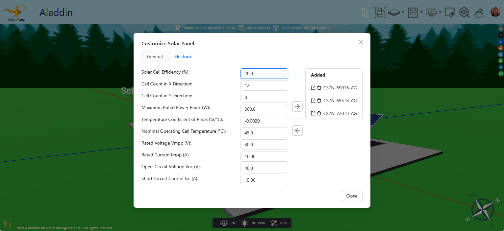
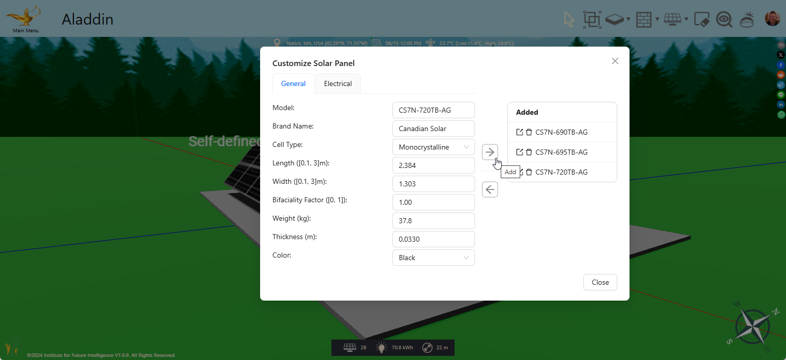
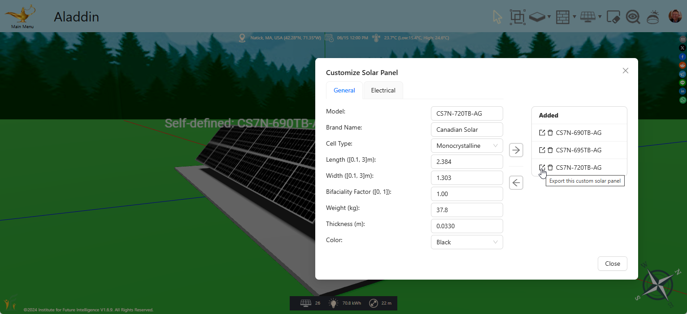
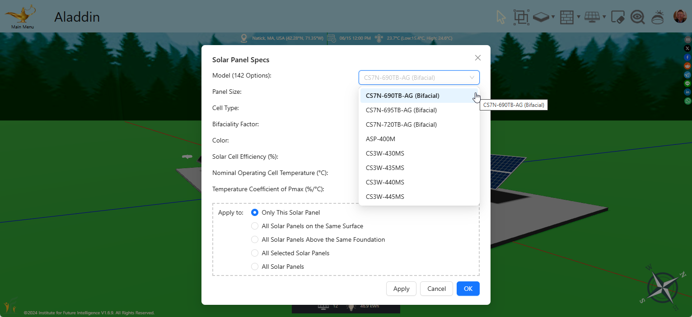

Define and Use Your Own Solar Panels
Extending Aladdin's simulation engine with custom solar panel specs so you can model the latest manufacturer products.
Aladdin provides more than 100 types of built-in solar panels for you to pick and choose in your solar energy design. But it is impossible for us to catch up with the booming semiconductor industry that is manufacturing more and better solar panels at an unprecedented pace. One of the questions that we often hear from Aladdin users is how they can use a specific type of solar panel in their designs. Chances are that the specific type is not available in the default list provided by Aladdin.
Starting from Version 1.6.9, you can define and use your own types of solar panels through the following steps. Note that for simplicity, when we mention solar panels in this article, we actually mean the types or models instead of individual solar panels. Hopefully this terminological convenience will not lead to confusions for our readers. To get started, select "Main Menu > Settings > Custom Solar Panels..."

The following window should open. This window contains two tabbed panes ("General" and "Electrical") where you can type in the specs of the solar panel that you would like to use. Despite the fact that you can type in anything permitted by the fields, we recommend that you choose a real-world solar panel and get its product data from the manufacturer. Suppose you want to try some latest products from Canadian Solar, such as this series of N-type TOPCon bifacial modules. Open the specs of the series available from Canadian Solar's website, select a module that you are considering, and then type its specs in the fields inside the window. It should take only a few minutes to fill these fields. Of course, it is better if you understand what each property in the specs actually means. For example, the power bifaciality specifies the percentage of power generated by the rear side against the power generated by the front side. Its value varies from 0 (monofacial) to 1 (perfectly bifacial). So if the solar panel is not a bifacial one (most solar panels for rooftop installation are not), the power bifaciality should be set to 0. For bifacial solar panels, this factor varies by module type: It is around 80% for TOPCon modules, around 70% for PERC modules, and around 90% for heterojunction modules. The specs from the manufacturer should have this information. If bifacial solar panels are new to you, you can learn about it from an earlier article from us and play with them in Aladdin.

Once you complete the inputs of the specs, press the Right Arrow button to add it to your file. If the model does not already exist in either your list of custom solar panels or the default list provided by Aladdin, it will show up in the "Added" list on the right side of the window. An added solar panel will be saved when you save the file. So when you open a file, Aladdin will bring back the solar panels that are previously defined. You can add more than one models. However, you should not try to use this tool to add a lot of solar panels for the purpose of creating a database of your own solar panels for use across the board. We are aware of this need and are working on another tool that allows users to build a common database of solar panels that can be shared within the user community.

If you want to look at the specs of a model in the list, you can click the Export button to copy it to the system clipboard.

Once a model is copied to the clipboard, you can press the Left Arrow button to import its specs to the fields within the tabbed panes. The existing specs will be overwritten (and lost if you have not added it yet). If you want to revise an existing model, you should import it first, modify its specs in the fields as needed, click the Trash Can button on the "Added" list to delete the existing entry, and then re-add the revised version to the list. If the model is used in your file, change those solar panels that use it to a different type. A model that is currently being used in the file cannot be removed.
The custom solar panel models that you define are available to be selected from the top of the Model list (in addition to all the system-provided models).

Note that the models that you define are limited to the scope of the file. If you need to use a model defined in another file, open the file, export the model to the clipboard, then come back to your current file and import it as described above. As stated above, we are working on a tool that will allow users to import a solar panel model from a community database contributed by users. When that database is available, you can submit your model for an existing product to the database and then import it into any file that you work on later. Other users can import your model as well, saving them time for defining this particular model.
← Back to Aladdin